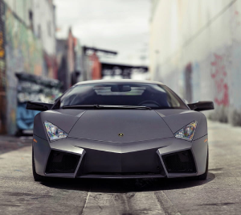

|  |
Lamborghini Reventon
|
The Lamborghini Reventón is a limited-edition high-performance supercar produced by the Italian automaker Lamborghini. It was first introduced in 2007 and only 20 units were produced, each of which was sold for a reported price of over $1.6 million.
The Reventón features a mid-engine layout and is powered by a naturally aspirated 6.5-liter V12 engine, which produces 650 horsepower and 487 lb-ft of torque. It is mated to a six-speed automated manual transmission and Lamborghini's all-wheel-drive system.
The Reventón is built using advanced lightweight materials, including carbon fiber and other composites, which helps to reduce its weight and improve its performance. It has a top speed of 211 mph and a 0 to 60 mph time of just 3.3 seconds.
The Reventón's exterior design is characterized by sharp angles, aggressive styling, and a stealthy black finish that is inspired by Lamborghini's aerospace roots. The interior is also designed to be futuristic and high-tech, with a cockpit-style layout, aluminum and carbon fiber accents, and a state-of-the-art instrument panel.
The Reventón was designed to be a track-focused supercar that is optimized for speed and performance. It is not intended for use on public roads and was primarily sold to collectors and enthusiasts who wanted a rare and exclusive Lamborghini.
Overall, the Lamborghini Reventón is a unique and impressive supercar that showcases Lamborghini's advanced engineering and design capabilities. It is considered to be one of the most exclusive and expensive cars ever produced by Lamborghini, and its rarity and performance make it highly sought-after among collectors and automotive enthusiasts.